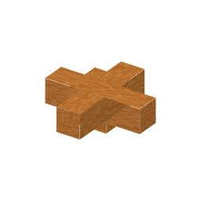

説明
①子ども 機械をつないで1つの電気の網にする。長いほど電気が減る。
③大人 電線の抵抗は R = ρL/A（長いほど大きく、太いほど小さい）。銅の抵抗率は約1.7×10⁻⁸Ω·m で、銀の次に電気を通しやすい。電線用の銅は電気分解で99.99%まで精製する（不純物が少しでもあると抵抗が大きく増える）。
④ガチ 本物の損失は P = I²R：同じ電力なら電圧を2倍にすると電流が半分、損失は4分の1になる。だから送電線は数十万ボルト（変圧器[4-10]）。この MOD では網全体で 1MW の上限を共有（1本の幹線とみなす）し、損失はどの機械にも最長経路の値を使う。どちらも簡略化。